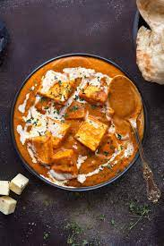

Paneer Butter Masala

Description
Paneer Butter Masala is a dish that is very common and popular in North India. It can generally be eaten with Naan and rice. It is a dish with a creamy texture and sweet taste
Ingredients
- 200 gm paneer/tofu
- 3 tomatoes
- 1 onion
- 1 tbsp garlic ginger paste
- 1 tbsp turmeric powder
- 1 tbsp chilli powder
- 1 tbsp Paneer Butter Masala spice powder (can also be substitited with butter chicken masala)
- 2 tsp salt
- 2 tbsp butter
- 2 tbsp fresh cream
Steps
- Chop the tomatoes into small pieces and then grind them into a paste, chop the onions into small pieces next
- Heat up a pan (medium to high flame), put 2 tbsp of oil and fry onions in it until they are golden brown
- Add the tomato paste to the pan, and add 2 tbsp of butter as well
- add salt, turmeric powder, chilli powder, and the paneer butter masala spice. Mix everything until the whole mixture has a orange-red colour
- Let the gravy cook for a few minutes. Simultaneously cut the paneer into small cubes
- Add the paneer to the gravy, stir the paneer around so it absorbs the gravy completely. Let this whole curry sit for around 5 minutes
- Turn off the pan and serve the curry with rice or some naan
- Enjoy!